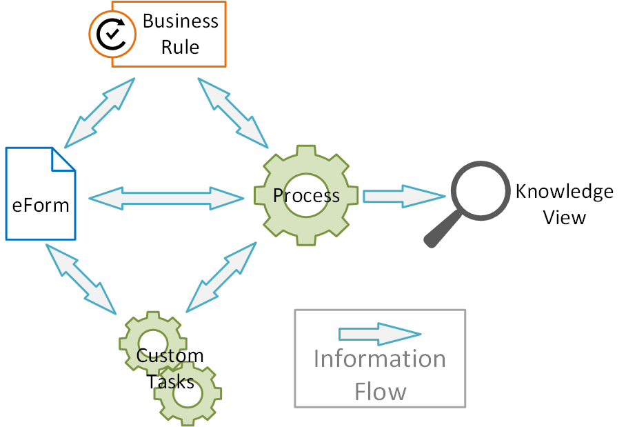
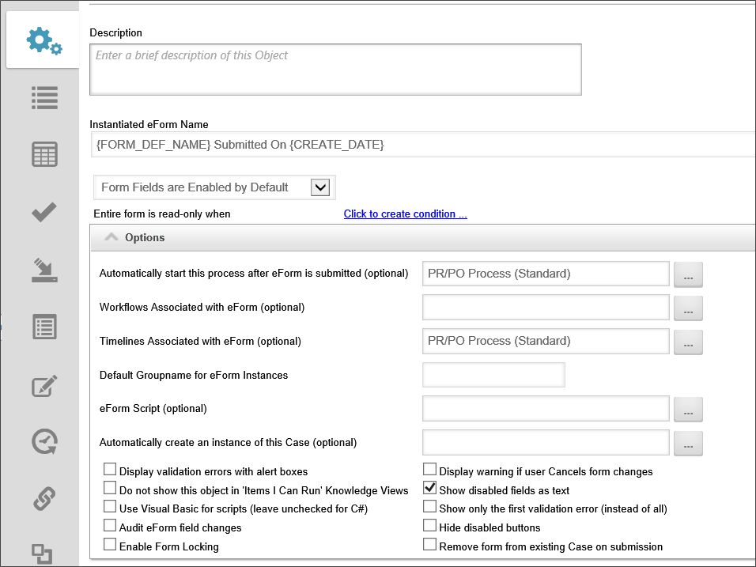
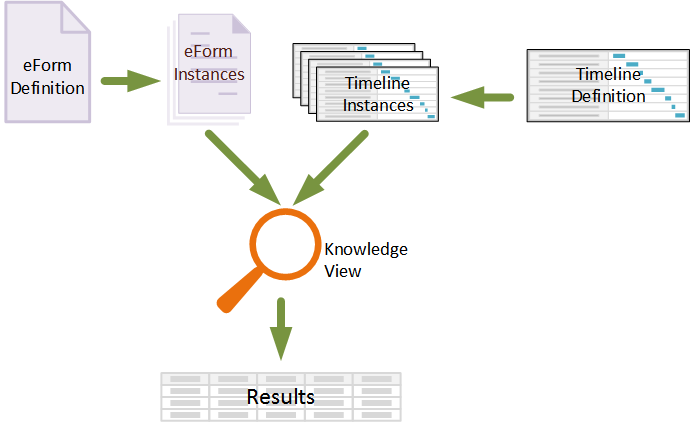

|
|
Lesson Contents | In this Lesson, you will learn the five basic Process Director objects, and their functions. |
Process Director is a Business Process Management (BPM) tool. Its main purpose is to model and automate a business process. A process is simply a series of actions or steps taken in order to achieve a particular end. Every organization, whether it’s a business, academic institution, or government entity, has processes. Also, some processes are fairly universal, which means nearly every organization uses them.
One example of a common process would be an approval process. Most organizations have an approval process for spending money. Usually, the process is started when an individual requests an expenditure of money. That request is then routed to one or more approving officials that must review and approve or reject the request. If the request is approved, the expense is disbursed by cutting a check or generating a purchase order.
Without some sort of tool for automating an approval process, the initial requestor usually must fill out a paper form, which much be physically sent to each subsequent person in the approval chain. Once the process is complete, the paper form must usually be stored for some length of time. Physically managing the process can be time consuming. Indeed, moving a piece of paper from place to place for written approval can be time-consuming as well.
Process Director eliminates the physical management of processes. Instead, Process Director takes over the management of the process by automating it. In the case of the sample approval process outlined above, the initial request is created as an electronic form. Once the form is submitted by the initial requestor, the approval process is implemented by a Process Timeline that identifies the different approval officials, automatically sends the request up the approval chain in the proper order, and tracks the time it takes to complete each step of the process.
Automating the process implements two immediate improvements. First, it vastly increases the efficiency of the process itself, by eliminating the physical movement of a request through the approval chain. Second, it simplifies the management of the process by allowing managers to administer the process electronically, rather than trying to physically track the movement of a paper document. A manager can open the process in Process Director, and immediately see what step of the process is being completed, and how long it’s taking for each step of the process to complete. Additionally, since Process Director collates the process data over time, managers can easily identify where time-consuming bottlenecks are occurring, and immediately access a mass of statistical data about the process to identify areas for possible improvement. In other words, managers can manage the process itself, instead of spending valuable time managing each individual instance of the process.
Process Director implements process automation by using a number of objects that we will discuss in this lesson, such as Forms, Process Timelines, and Business Rules. All of these objects have a high level of interoperability with each other.
The term interoperability means the ability to have Process Director objects work together and to depend on each other to perform the right steps in the right sequence, using the correct information. For instance, an Form is required to start a Process Timeline. In turn, different steps in the Process Timeline may require that different information be collected or displayed on the Form. A Business Rule may change which steps are performed in a Process Timeline, or what information appears on an Form. All of the Process Director objects are dependent on each other to properly model and automate a business process.

Interoperability enables you to create processes with a very high degree of complexity and detail because, as the diagram illustrates, Process Director objects can interact with each other to pass information back and forth in complex ways. For instance, information from an Form field can be used by a process, business rule, or custom task to generate new information that can then be passed back to the Form. While this complexity is extraordinarily useful, it also requires that implementers invest in gaining the breadth of knowledge required to use these complex interactions properly.
With this in mind, let’s turn to an overview of the Process Director objects.
The Form, is the primary method of entering process information into Process Director. The Form is composed of two main parts: the Form Definition that describes the properties and events associated with the Form, and the Form template that implements the visual design of the Form. Both the definition and template are stored in Process Director. After the template's design process using Word is complete, Process Director imports the template, parses it to find all of the form fields in the Word template, then adds the form fields to the form definition.
The Form Definition is the Process Director object that identifies all of the properties, fields, events, and conditions that govern the way an Form works. In Process Director, the different Form options and properties are organized into a tabbed user interface. Users can navigate to different Form properties by clicking the appropriate tabs.

The Form Properties tab contains all of the general properties for the Form Definition. The Form Controls tab contains a list of all of the Form fields and the field properties for each of them. The Custom Task Event Mapping tab list all of the Process Director custom tasks that are associated with form field events. The Validation Rules tab contains a list of all of the rules that apply to a form to ensure the form information is valid before users are allowed to submit the form. The Set Form Data tab enables you to change form data to desired values. Finally, the Fill Dropdowns tab enables you to configure the options that will appear in dropdown and list controls.
In most cases, a process is initiated when a user fills out and submits an Form. The Form Definition is where where you indicate what process is started when the form is submitted.
Forms can, at the user’s discretion, become quite complicated, with multiple processes—or even multiple forms—incorporated into various stages of a process. Users can, therefore, design Forms with an extraordinary degree of flexibility, in order to implement complex processes.
Process Director includes two different methods for creating an Form template. One method uses Microsoft Word as an editing tool, as well as a BP Logix plugin that must be installed as an add-in. We refer to this as the Word Form Builder. This is a more complex solution to maintain and configure, and is covered in the Advanced Proficiency Training course. The primary method for creating Form templates is to use the Online Form Designer that is built into Process Director.
When you create an Form Definition, Process Director automatically includes a new, blank template for the Form Definition, and also provides versioning for the template, so you can, for instance, revert to a previous version of the document to eliminate unwanted edits. Process Director also ensures that you can track who checked the template out, and when. Finally, if a template has been checked out, Process Director can prevent anyone else from editing the template until it has been checked in. You check out the Form template automatically whenever you click on the Edit tab of the Form definition to open the Online Form Designer.
Saving the Form template in the Form Designer automatically checks the template back into Process Director. During the check in process, Process Director scans the template to see what fields have been changed, added, or deleted. Once the scanning and updating is complete, you can go to the Form Definition’s Form Controls tab. Once there, you can delete or remap Form Definition fields that have been deleted or changed on the Form template.
As mentioned previously, Process Director will add the controls to the Form Definition as fields. When it does so, it will use the control name you have used in the template design stage. Just as the controls have properties that you access from the template, the fields that Process Director creates have their own set of properties. You can access these properties by navigating to the Form Controls tab of the Form Definition, and double-clicking the control name, or clicking the Edit link that appears in the field’s row. This opens a dialog box to allow you to change such properties as the default value of the field, when it can appear on the form, or when users can enter data into the control.
You may also want to make an event occur when a user enters or changes the data in a field. For instance, you can set a field to perform a calculation when a user enters a number into the field. There are a wide variety of custom tasks that can be run when a field event occurs. You can direct these custom tasks to run when a field event occurs by adding them to the Custom Task Event Mapping tab.
The Process Timeline functionality of Process Director is what sets it apart. Process Director adds the element of time to process management in a way that nothing else does. Instead of traditional flowchart-based workflows, Process Director's Process Timeline uniquely adds scheduling and predictive capabilities to workflow management.
The Process Timeline may look familiar to you, because it is presented in Gantt chart format. The Gantt chart is a type of chart that places each activity in a process on a single line that is horizontally marked in some increment of time, usually days. Each activity is marked with a bar that whose left end begins at the task's start date, and ends at the task's end date. This type of chart is widely used in project management.

Most activities have a dependence on one or more other activities. Dependence refers to the requirement that an activity cannot begin until a predecessor activity, or activities, ends. This type of relationship (often referred to by project managers as finish-to-start) represents the most fundamental starting condition for any activity.
An activity may also be a parent or child activity. A parent activity is a container for other, subordinate activities, each of which is referred to as a child activity. The child activities begin when the parent activity begins. Once all of the child activities are complete, the parent is complete. Usually, the parent activity has no tasks associated with it. Instead, all of the tasks are associated with the child activities. In the normal course of events, the parent activity merely serves as a convenient method of grouping similar activities.

In Process Director, it is possible for a parent and child activities to have a much more advanced interaction than described here. These interactions are intended to support more specialized and unusual cases, however, so they will be addressed in more advanced lessons.
BP Logix developed the Process Timeline to address the need to measure and predict process execution times. Process Timeline enables organizations to build robust, executable process models within Process Director. Business users design Process Timelines by answering two questions as they add each step to the process:
We refer to these, respectively, as the dependence and duration questions. Each activity will begin as soon as its prerequisites, if any, are complete. The result is a solution with many variable features:
Each activity in the Process Timeline has an Actions column with four icons, each of which enable you to modify one of the activity's properties.
|
ICON |
ACTION |
|---|---|
|
|
Drag to move under another parent: Drag the activity to a parent activity. The activity you drag will become a child of that parent. |
|
|
Drag to move order: Change where the activity appears in the Process Timeline. Note: changing the location of the activity does not change the behavior of the Process Timeline, which is strictly governed by the rules of dependence and other activity starting conditions. |
|
|
Drag to add a dependence: Drag and drop an activity onto another to make the dragged activity dependent upon the target. |
|
|
Conditions: Click this icon to open the activity's properties on the Needed When tab. |
|
|
Properties: Click this icon to open the activity's properties on the Start When tab. |
The properties for each activity are presented in a tabbed interface. Each tab groups similar properties together.
|
TAB |
DESCRIPTION |
|---|---|
|
Activity |
This tab enables the user to select the Activity Type, such as a User, Custom Task, Form Action, etc. It also contains other general activity settings. |
|
Activity type |
This tab will show specific properties that pertain to the Activity Type you select. The tab's label will change to reflect the selected Activity Type. |
|
Start When |
This tab enables you to inspect and modify the dependencies and conditions that determine when the activity will start. |
|
Completed When |
This tab enables you to inspect and modify the conditions that determine when the activity will complete. Rarely used, as most activities complete organically (such as when a user submits a form, or an automated task completes). |
|
Needed When |
This tab enables you to inspect and modify the conditions that determine if an activity will be run once its start conditions have been met. These conditions will be evaluated once when the activity becomes eligible to start. |
|
Due Date |
This tab enables you to inspect and modify the due date for the activity, and the actions to take when the activity is not completed by the due date. |
|
Notifications |
This tab enables you to configure who is notified about the activity and when notifications should be sent. |
|
Advanced Options |
This tab enables you to configure advanced properties, such as how the activity is assigned to user, what steps to take when a user completes the activity, etc. |
One of the things that makes Process Timelines so useful, is the ability to see how the process performs in the real world, as opposed to the way the Process Timeline was designed. Process Director enables this through the Analyze Timeline function. Since we do not have a working process with historical data to analyze yet, there is little to analyze in our current Process Timeline, but you should be aware of this analysis capability.

In the Timeline definition screen of any Process Timeline, clicking the Analyze Timeline menu option opens the Process Timeline in the analysis view.

Process Director analyzes all previous instances of the Process Timeline. Based on the actual times recorded from those instances, the analysis view projects the expected start dates, end dates, and durations for each activity in the process. The Analyze Timeline view allows you to easily see how the actual performance of the process compares to the configured performance.
In the analysis view, the triangles represent the projected start and end dates for each activity in the Process Timeline. These triangles are superimposed over a gray activity bar that indicates the time period during which the activity is configured to occur.
Red triangles indicate that the start or end date for an activity is projected to occur later than the activity's configuration indicates. The red triangles can mean that the activity's duration is projected to take longer than configured, but this is not necessarily true. For example, an activity's duration may be projected to take less time than configured, but if the activity is projected to start later than the configuration indicates, the triangles will still be red. Blue triangles indicate that the start or end date will occur approximately when indicated. Green triangles indicate that the activity's start or end dates are projected to occur before the configuration indicates. The line between the two triangles indicates the projected duration of the activity.
A percentage number on the activity bar indicates the percentage of time the activity actually takes to complete, on average, compared to the configured duration. A negative percentage indicates that the average activity duration is shorter than the configured duration. A positive percentage indicates the actual activity duration is, on average, longer than the configured duration.
If you move your mouse over the triangles, a tooltip will pop up will appear that displays more statistical information about the activity. The tooltip displays comparisons between actual and configured end dates and durations.

So, if we use this information to analyze the Process Timeline shown above, we can see that the Initial Approval activity takes slightly less than two workdays to complete, on average, which is 61% faster than the activity's configured duration of three workdays. Similarly, the Finance Approval activity has taken, on average, 66% less time than configured. Overall, the average process time for this Process Timeline is two workdays, compared to the configured duration of 5 workdays.
The analysis view makes it easy to compare actual process times to configured times. It shows you where bottlenecks or delays are occurring in your processes. Over time, using Analyze Timeline gives you the information you need to identify and solve trouble spots and bottlenecks.
You can revert to the Process Timeline's definition view from the analysis view by clicking the Timeline Definition button that is displayed above the Timeline.

Business Rules define some aspect of a business process and control its operation. Business Rules provide a convenient and useful way to encapsulate complicated or frequently used decisions and make them available for use by any process or Form.
Business rules generally evaluate a condition or set of conditions, and then return a value based on the results of the evaluation. A condition is a true or false statement that is evaluated in order to determine an appropriate response. Based on this evaluation, the rule commonly returns a "Yes" or "No" answer.
Other, more complicated, business rules might evaluate a number of conditions and return a number of different values. For example, let's say that you have a sales representative assigned to a particular state, or number of states. The business rule may evaluate a field that contains the state in which a customer lives and return the name of the appropriate sales representative to a Process Timeline. The Process Timeline can then assign an action to the appropriate sales representative. In this example, the Business Rule evaluates a set of fifty-one different conditions (if we include the District of Columbia). Based on the result of that evaluation, the Business Rule will return the name of the sales representative for the customer's home state.
To understand how Knowledge Views work, we must first understand what Process Director does with definition objects like Form definitions, Process Timeline definitions, etc. The definition object contains no actual data, but merely defines what data will be stored. For example, the Form definition describes the data fields that the user will fill out to enter data. Similarly, the Process Timeline definition describes when activities will start and end, or when a user task will become due, based on when the process begins.
Regular, non-administrative users never interact with any of the definition objects directly. Instead, when a user wants to, say, fill out an Form, The Form definition makes a copy of itself, called an instance, that the user will fill with data in the fields specified in the Form definition. This instance object is what actually contains the data entered by the user. If ten different people fill out an Form, Process Director creates an instance for each person, so that there are ten instances of the Form, each of which contains the data filled out by one of the ten users.
By the same token, when a user submits an Form that initiates a Process Timeline, a new instance of the Process Timeline definition is created that stores the information about that specific run of the process. The whole purpose of the definition object is to describe the instance objects that are created to interact with the user.
Let's take a closer look at an example of the Process Timeline definition and a Process Timeline instance. When the definition is created, we might define a user activity as being due three days after the activity starts. When we create the definition, we obviously don't know when the activity will start. All we know is that, whenever the activity starts, we want the activity to become due in three days. When a user submits the Form that starts the process, Process Director creates an instance of the Process Timeline that contains the actual activity dates for that specific run of the process. So, in our example, if the activity begins on January 1st, the Process Timeline instance that is created will now set the due date for the activity as January 4th.
When we search for information in Process Director, we really don't care much about the definition objects, because they don't contain the data. While there are other, more complicated scenarios for using Knowledge Views, we are usually interested in searching through all of the existing instances of an Form or process to find specific data. We might, for instance, want to search for all timeline activities that are due in the next week, or for all Forms that were submitted by a specific person.

Knowledge Views display information in a tabular format, much like a spreadsheet. So much so, in fact, that the Knowledge View results can be exported to CSV or Excel format.
When constructing a Knowledge View, you select the columns that you wish the Knowledge View to display. The columns can consist of any system variable, such as Form fields, business rule results, Process Timeline values, and much more.
You can also choose to see different types of objects in the results. You can search for Forms, Process Timeline instances, business rules, documents, or any other type of Process Director object. You can select any number of object types to return, as well. The ability to return results containing any system variable from any type of Process Director object makes Knowledge Views very powerful.
Adding to that power is the filtering capability of Knowledge Views. Just as you can make a Knowledge View column out of any system variable, you can also filter every column to return only specific results.
Knowledge Views have a large number of properties and advanced properties. The sheer number of options may be daunting at first, but it is the large number of configuration options that makes Knowledge Views so useful.

The Properties tab enables you to configure the basic properties of the knowledge View, including the other Process Director objects you wish to associate with the Knowledge View. In Process Director, an association between objects specifies the default objects you wish to use when choosing object properties. For instance, when you associate a specific Form with a Knowledge View, then any time you choose to display a Form field, the Knowledge View will, by default, display form fields from the Form you have associated with the Knowledge View. If you do not make the association, then if you choose to display a form field, you must select the Form for each individual field you want to display. So, in a case where you are creating a Knowledge View that uses a specific form, making the association in the Properties tab makes choosing fields much easier. The same holds true for associations with a Timeline, Case, etc.
The Configure tab defines the appearance of the Knowledge View window. The presentation allows the look and feel presented to your users to be changed. The presentation allows various configuration values to be set including where the output should be sent (e.g. browser vs. report vs. chart), the maximum number of items to be returned, and how to display documents. For a Knowledge View to not appear on a user's Home Page, you must set the Do not show this object in 'Items I Can Run' Knowledge Views checkbox to true. A detailed look at these options will be covered later, in the lesson on Knowledge Views.
The Options tab defines the results that you wish to display in the Knowledge View window when it runs. Providing these options will give the end user additional actions to enhance reporting and provide more control of objects in Process Director. These controls are used throughout the system (e.g. Task List, Content List, etc.). A detailed overview of the advanced options will be covered later, in the lesson on Knowledge Views.
The Columns tab defines the columns to display in the Knowledge View. The column data can include form fields, process data, Meta Data, or various object properties. The order of the columns can be changed using the up arrow () and down arrow () to the right of the column. Columns can be removed using the delete () icon.
The sort order can be configured in the Knowledge View; however the end user can override this by clicking on the columns names on the Knowledge View. The sort order is not used when exporting the results to a CSV or an Excel Report, it is only used when the results are displayed in the browser.

The Filter tab identifies filter criteria that specifies what objects are available to this Knowledge View. The filter criteria can include form field data, categories, attribute values, or various object properties (e.g. author, document type, published). The filter criteria can identify what document versions to display – the latest document version or only the published version.
The end user can optionally be given the ability to override any of the filter values. This allows the field name and the input box to be displayed on the running Knowledge View so the user can input the additional filter information.
When using Process Director, there are a number of tasks that need to be done repeatedly. For instance, it is quite common to use information contained in an external database to fill out the options in a dropdown list, such as the name of company departments, or the names of vendors. Process Director encapsulates a number of these useful, often-used functions into objects called Custom Tasks. BP Logix developers periodically update the set of common Custom Tasks, or add new ones.
Some of the most common uses for Custom tasks are to use an external database or other system to enter information in an Form, or to convert documents to PDF format, as described below.
A dropdown control contains a list of options from which users must make a selection. Quite often, an Form needs to display a list of options that come from an external system, such as an ERP or HR system. The Fill Dropdown Custom Tasks enable you to select the system from which the options should come, and automatically fill a dropdown control with the selected options list.
Fill Dropdown from DB: This Custom Task enables you to use data from an external database to fill the options for a dropdown control.
Fill Dropdown from Web Service: This Custom Task enables you to use data from a web service to fill the options for a dropdown control.
Similar to a Fill Dropdown Custom Task, the Fill Fields Custom task also extracts data from an external system, but uses the data to fill out an Form field to store the data. For instance, if you provide an employee name, you might wish Process Director to enter the employee's department, Employee ID, or phone number automatically. With a Fill Fields Custom Task, Process Director will retrieve the employee information and enter it in the appropriate Form fields, so that the Form submitter won't have to fill out the information manually.
Fill Fields from DB: This Custom Task enables you to use data from an external database to enter data into an Form control.
Fill Fields from Web Service: This Custom Task enables you to use data from a web service to enter data into an Form control.
It's common to use Process Director to store documents in a variety of formats such as Word documents, Excel spreadsheets, etc. The Convert to PDF Custom Task converts all of these documents to PDF format, so that they can be universally read through the browser.